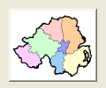

ButtonImageGadget()
语法
Result = ButtonImageGadget(#Gadget, x, y, Width, Height, ImageID [, Flags])概要
Create a button gadget with an image in the current GadgetList.
参数
#Gadget A number to identify the new gadget. #PB_Any can be used to auto-generate this number. x, y, Width, Height The position and dimensions of the new gadget. ImageID The image for the gadget. Use the ImageID() function to get this ID from an image. This parameter can be zero to create a button without an image. The SetGadgetAttribute() function can be used to change the image later. Flags (optional) This parameter can be #PB_Button_Toggle to create a toggle-button (one which has an on/off state). A push-button is created by default.
返回值
Returns nonzero on success and zero on failure. If #PB_Any was used as the #Gadget parameter then the return-value is the auto-generated gadget number on success.
备注
A 'mini help' can be added to this gadget using GadgetToolTip().
The following functions can be used to control the gadget:
- GetGadgetState() can be used to get the toggle state of the gadget.
- SetGadgetState() can be used to set the toggle state of the gadget.
- GetGadgetAttribute() with the following values:#PB_Button_Image : Get the displayed image. #PB_Button_PressedImage: Get the image displayed when the button is pressed.- SetGadgetAttribute() with the following values:#PB_Button_Image : Set the displayed image. #PB_Button_PressedImage: Set the image displayed when the button is pressed.
示例
If OpenWindow(0, 0, 0, 120, 100, "ButtonImage", #PB_Window_SystemMenu | #PB_Window_ScreenCentered) If LoadImage(0, "map.bmp") ; change 2nd parameter to the path/filename of your image ButtonImageGadget(0, 10, 10, 100, 83, ImageID(0)) EndIf Repeat Until WaitWindowEvent() = #PB_Event_CloseWindow EndIf

参阅
GetGadgetState(), SetGadgetState(), GetGadgetAttribute(), SetGadgetAttribute(), ButtonGadget(), ImageID(), EventGadget()
已支持操作系统
所有